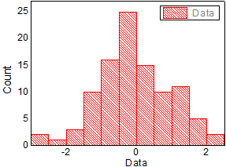
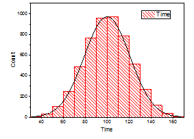
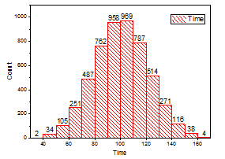
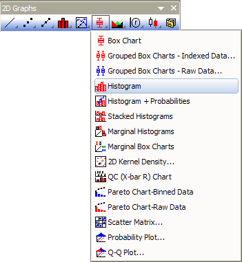
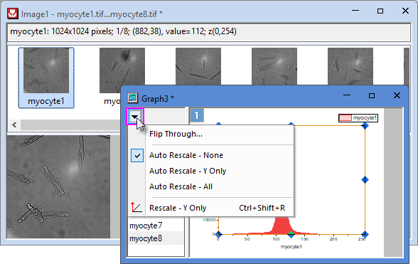

Histogramm/Verteilungsdiagramm
Histogram-Graph
| Histogramm
|
Verteilung
|
Histogramme mit Beschriftungen
|
|  |
 |
 |
Datenanforderungen
- Arbeitsblatt: Markieren Sie eine oder mehrere Spalten (oder einen Bereich aus einer oder mehreren Y-Spalten).
oder
- Matrix: Wählen Sie ein Matrixblatt. Falls sich mehrere Matrixobjekte im Blatt befinden, wird das aktive Matrixobjekt gezeichnet.
oder
- Bild: Wählen Sie ein Bildfenster. Falls das Bild mehrere Frames enthält, werden alle Frames gezeichnet. Lesen Sie in dem Hinweis unten, wie Sie durch alle Frames gehen.
Diagramm erstellen
Histogramm
- Wählen Sie die gewünschten Daten aus.
- Wählen Sie im Menü .
- oder
- Klicken Sie auf die Schaltfläche Histogramm auf der Symbolleiste 2D-Grafiken.
- 
Histogramm mit überlagerter Verteilungskurve
- Wählen Sie die erforderlichen Daten (Arbeitsblatt).
- Wählen Sie im Menü .
Histogramme mit Beschriftungen
- Wählen Sie die erforderlichen Daten (Arbeitsblatt).
- Wählen Sie im Menü .
Weitere Einzelheiten sehen Sie im Abschnitt zum Erstellen und benutzerdefinierten Anpassen vonHistogrammen.
Vorlage
Histogramm: HIST.OTP
Verteilung: HISTDIST.OTP
Mit Beschriftung: HistLabel.OTP
Alle drei oben genannten Vorlagen sind im Origin-Programmordner installiert.
Notizen
- Hinweis: Der Menübefehl zeichnet alle ausgewählten Daten in den gleichen Layer.
- Das Histogramm mit überlagerter Verteilungskurve kann aus einem Histogramm erstellt werden, indem ein Verteilungstyp in der Auswahlliste Verteilungskurve: Typ auf der Registerkarte Daten im Dialog Details Zeichnung ausgewählt wird. Entsprechend kann das Histogramm mit Beschriftungen aus einem Histogramm erstellt werden, indem die Beschriftungen auf der Registerkarte Beschriftung aktiviert werden.
- Bei einem Bild mit mehreren Frames werden alle Frames gezeichnet. Um alle Frames anzuzeigen:
- Klicken Sie auf die Schaltfläche Browserdiagramm mit wechselnder Spalte
 auf der Minisymbolleiste der Seitenebene. Dies öffnet das Navigationsbedienfeld auf der linken Seite.
auf der Minisymbolleiste der Seitenebene. Dies öffnet das Navigationsbedienfeld auf der linken Seite.
- Klicken Sie auf die dreieckige Schaltfläche.
- Durchblättern: Die Frames werden entsprechend den vom Anwender festgelegten Schritten angezeigt.
- Automatisch neu skalieren - Kein/Y Nur/Alle: Keine Achse automatisch neu skalieren/Y-Achse automatisch neu skalieren/X- und Y-Achse automatisch neu skalieren.
- Neu skalieren - Nur Y: Y-Achse manuell neu skalieren.
- 